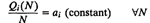
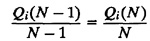
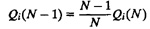
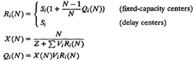
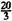

| Previous | Table of Contents | Next |
Mean-value analysis is a recursive algorithm. Computation of performance with N jobs in the network requires knowledge of performance with N – 1 jobs. Since performance with N = 0 is trivially known, we always start the analysis with N = 0 and compute the performance for N = 1,2,... successively. For small values of N, this procedure is not computationally too expensive. However, for large values of N, particularly if the performance for smaller values of N is not required, it would be preferable to avoid this recursion. Several approximate analysis techniques have been developed with this goal. Here we describe one such approximation technique known as Schweitzer’s approximation. It avoids the recursion in MVA by appropriately estimating the queue lengths with N jobs and computing the response times and throughputs. The values so computed can be used to recompute the queue lengths, and if the previous estimate was good, the new computed value would be close to the estimate.
The approximation, due to Schweitzer (1979), is based on the assumption that as the number of jobs in a network increases, the queue length at each device increases proportionately. For example, doubling the number of jobs in the network will result in doubling the number of jobs at each device. Analytically:

In particular, this implies

or

The MVA equations can therefore be written as follows:

Notice that the each iteration starts with some values for number of jobs Qi(N) at various devices and ends by recomputing new values for Qi(N). If the new values are not close to the values at the start of the iteration, we need to continue iterating. If they are sufficiently close, we stop. There is no guarantee that the successive iterations will converge. However, Bard (1979) tried several cases and found that it converges in almost all cases.
The initial values for queue lengths should not affect the final result, although they may affect the number of iterations required. One alternative is to start with all queue lengths being equal.
|
The complete MVA algorithm using Schweitzer’s approximation is summarized in Box 34.3.
SA = 0.3, VA = 10 ⇒ DA = 3
SB = 0.2, VB = 5 ⇒ DB = 1
DCPU = 2, VCPU = VA + VB + 1 = 16 ⇒. SCPU = 0. 125
Z = 4, N = 20
To initialize the queue lengths, we assume that the 20 jobs are equally distributed among the three queues of CPU, disk A, and disk B:
QCPU = QA = QB =  = 6.67
Iteration 1
Device response times:
RCPU = SCPU(1 + QCPU) = 0.125(1 + 6.77) = 0.92
RA = SA(1 + QA) = 0.3(1 + 6.77) = 2.20
RB = SB(1 + QB) = 0.2(1 + 6.77) = 1.47
System response time:
R = RCPUVCPU + RAVA + RBVB = 0.92 × 16 + 2.20 × 10 + 1.47 × 5 = 44
System throughput:
X = N/(R + Z) = 20/(44 + 4) = 0.42
Device queue lengths:
QCPU = XRCPUVCPU = 0.42 × 0.92 × 16 = 6.11
QA = XRAVA = 0.42 × 2.20 × 10 = 9.17
QB = XRBVB = 0.42 × 1.47 × 5 = 3.06
Maximum absolute change in device queue lengths:
ΔQ = max{|6.67 – 6.11|,|6.67 – 9.17|,|6.67 – 3.06|}
= max{0.56, 2.5, 3.61} = 3.61
Since the maximum absolute change in queue lengths is more than our stopping criterion of 0.01, we continue with the second iteration. In fact, it requires 16 iterations before satisfying the stopping criterion. The response times, throughputs, and queue lengths at the end of these iterations are listed in Table 34.2.
In this example, we used a stopping criterion of ΔQ ≤ 0.01. Other alternatives, although not as good, are to stop when the relative change in response time or throughput is below a certain threshold.
| Previous | Table of Contents | Next |